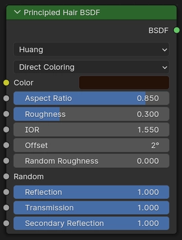
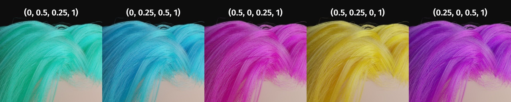
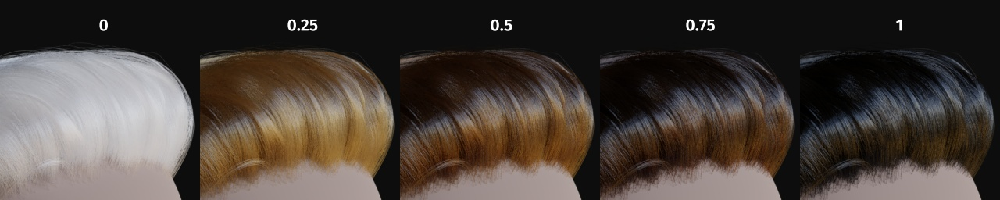
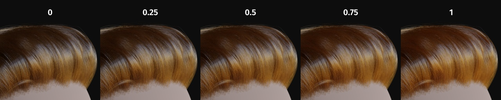
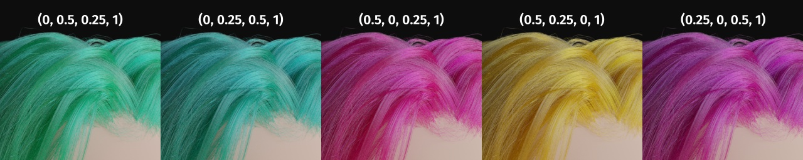
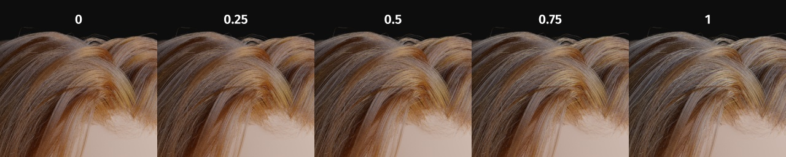
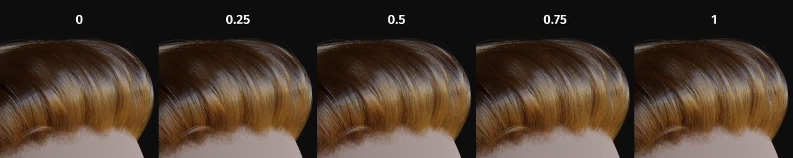
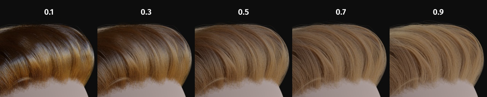
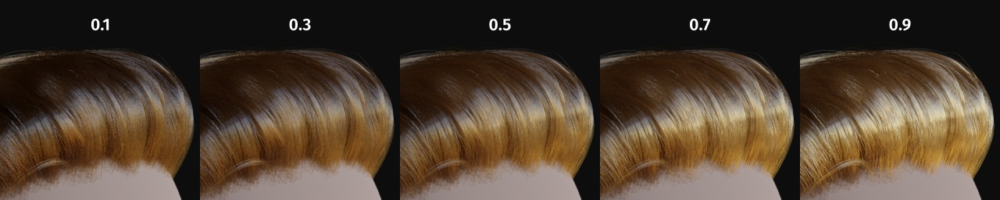
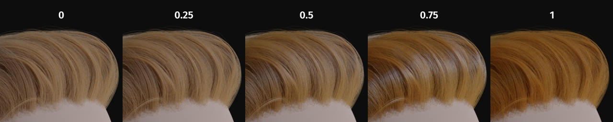

Principled Hair BSDF¶

Cycles Only
BSDF Principled Hair là một shader dựa trên vật lý, dễ sử dụng, để render tóc và lông.
Mẹo
Tóc thực tế nên có sự biến thiên tối thiểu giữa từng sợi. Shader cho phép điều này bằng cách chỉ định hai giá trị, Random Color và Random Roughness, vốn ánh xạ lại các giá trị Melanin/Roughness đã chỉ định vào dải \(Color/Roughness \pm Randomization\%\).
Inputs¶
Common¶
- Color
Màu RGB của sợi. Chỉ được dùng trong chế độ tô màu Direct.
Gợi ý
Màu đã chọn được chuyển thành hệ số hấp thụ bằng công thức sau (mục 4.2 của [CBTB16]):
\[\sigma_{a} = \left( \frac{\ln(Color)} {5.969 - 0.215\beta_{N} + 2.532\beta_{N}^{2} - 10.73\beta_{N}^{3} + 5.574\beta_{N}^{4} + 0.245\beta_{N}^{5}} \right)^{2}\]trong đó \(\beta_{N}\) là độ nhám hướng tâm của tóc sau khi áp dụng phần ngẫu nhiên hóa (nếu được chỉ định).

Tô màu tóc bằng cách tham số hóa Direct coloring. (Các con số phía trên là giá trị RGB.)¶
- Melanin
Lượng tuyệt đối của sắc tố. Dải \([0, 1]\) tương đương \([0\%, 100\%]\).
Gợi ý
Đây là một phép ánh xạ tuyến tính sang hàm mũ bên dưới:
\[melanin\_qty = -\ln(\max(1.0 - Melanin, 0.0001))\]
Melanin.¶
- Melanin Redness
Tỉ lệ giữa pheomelanin và eumelanin. Dải \([0, 1]\) tương đương \([0\%, 100\%]\).
Gợi ý
Công thức tỉ lệ là: \(eumelanin = Melanin×(1.0-MelaninRedness)\), \(pheomelanin = Melanin×MelaninRedness\).
Các lượng thu được được chuyển (sau khi ngẫu nhiên hóa, nếu được chỉ định) thành nồng độ hấp thụ qua công thức sau (mục 6.1 của [EFHLA11], điều chỉnh cho dải \([0, 1]\)):
\[\begin{split}\sigma_{a} = eumelanin × \left[\begin{matrix} 0.506 \\ 0.841 \\ 1.653 \\ \end{matrix}\right] + pheomelanin × \left[\begin{matrix} 0.343 \\ 0.733 \\ 1.924 \\ \end{matrix}\right]\end{split}\]
Melanin Redness.¶
- Tint
Màu dùng để nhuộm tóc sau khi áp sắc tố melanin. Màu này không chịu tác động của phần ngẫu nhiên hóa. Nó có thể bị tắt bằng cách đặt màu thành trắng.
Gợi ý
Màu này được chuyển qua phép ánh xạ Color ở trên và cộng vào hệ số hấp thụ của nồng độ melanin.

Tint, dùng Melanin 0.1 và các giá trị RGB tương ứng.¶
- Absorption Coefficient
Hệ số suy giảm \(\sigma\).
- IOR
Chiết suất (IOR) xác định mức độ tia đổi hướng. Ở 1.0, tia đi xuyên thẳng như trong vật liệu trong suốt; giá trị cao hơn cho khúc xạ nhiều hơn. Giá trị mặc định là \(1.55\).
- Offset
Nghiêng vệt sáng của tóc bằng cách tăng góc của các vảy biểu bì tóc so với thân tóc. Tóc người thường có giá trị thấp.
- Random Color
Với từng sợi, thay đổi nồng độ melanin theo \(RandomFactor\). Dải \([0, 1]\) tương đương \([0\%, 100\%]\) nồng độ melanin ban đầu.
Gợi ý
Nồng độ melanin được nhân với \(randomFactor\), trong đó \(randomFactor = 1.0 + 2.0×(Random - 0.5) × RandomColor\).

Random Color.¶
- Random Roughness
Với từng sợi, thay đổi cả hai giá trị Roughness theo \(RandomFactor\). Dải \([0, 1]\) tương đương \([0\%, 100\%]\) giá trị độ nhám ban đầu.
Gợi ý
Công thức được áp dụng giống với Random Color.

Random Roughness.¶
- Random
Nguồn số ngẫu nhiên. Nếu không có node nào được nối vào đây, nó sẽ tự động được khởi tạo với giá trị lấy từ .
Chiang Model¶
Mô hình Chiang dựa trên phân phối Gauss với độ nhám riêng cho hướng dọc theo tóc và hướng vuông góc với tóc.
- Roughness
Chỉ định mức độ các vệt sáng được làm mượt theo hướng thân tóc. Giá trị quá thấp sẽ làm tóc mượt đến mức trông gần như kim loại, khiến các vệt sáng trông giống Fireflies; còn đặt quá cao sẽ cho diện mạo kiểu Lambertian.

Roughness.¶
- Radial Roughness
Chỉ định mức độ các vệt sáng được làm mượt theo hướng normal của tóc. Giá trị quá thấp sẽ làm vệt sáng bị tập trung; còn đặt quá cao sẽ dàn ánh sáng ra trên toàn chiều rộng của sợi.
Gợi ý
Về mặt toán học, tham số này được ánh xạ sang hệ số tỉ lệ \(s\) của phân phối logistic (mục 4.1 của [CBTB16]).

Radial Roughness.¶
- Coat
Mô phỏng lớp lông bóng, bằng cách giảm Roughness theo hệ số đã cho chỉ cho lần bounce ánh sáng đầu tiên (diffuse). Dải \([0, 1]\) tương đương mức giảm \([0\%, 100\%]\) Roughness gốc.

Coat.¶
Huang Model¶
Mô hình Huang dựa trên phản xạ và truyền qua kiểu microfacet, và hỗ trợ tóc có tiết diện hình elip.
- Aspect Ratio
Tỉ lệ giữa trục ngắn và trục dài của tiết diện elip. Giá trị khuyến nghị là 0.8~1 cho tóc người Á, 0.65~0.9 cho tóc người Âu, 0.5~0.65 cho tóc người Phi. Trục dài được thẳng hàng với normal của đường cong, vốn có thể được tạo bằng geometry nodes, nhưng không được hỗ trợ trong hệ tóc particle kiểu cũ.
- Roughness
Độ nhám microfacet cho phản xạ và truyền qua.
- Reflection
Hệ số tùy chọn để điều biến lần bounce ánh sáng đầu tiên khỏi bề mặt tóc. Màu của thành phần này luôn là trắng. Giữ giá trị 1.0 để đảm bảo tính chính xác vật lý.
- Transmission
Hệ số tùy chọn để điều biến thành phần truyền qua. Thành phần này nhận màu của sắc tố bên trong tóc. Giữ giá trị 1.0 để đảm bảo tính chính xác vật lý.
- Secondary Reflection
Hệ số tùy chọn để điều biến thành phần được truyền vào trong tóc, phản xạ khỏi mặt sau của tóc rồi truyền ra khỏi tóc. Thành phần này định hướng xấp xỉ quanh hướng tới, và nhận màu của sắc tố bên trong tóc. Giữ giá trị 1.0 để đảm bảo tính chính xác vật lý
Properties¶
- Color Parametrization
Shader cung cấp ba cách khác nhau, hay ba parametrization, để tô màu các sợi tóc.
- Direct Coloring:
Chọn màu RGB mong muốn và shader sẽ xấp xỉ hệ số hấp thụ cần thiết (ở dưới).
- Melanin Concentration:
Chế độ này định nghĩa màu thông qua lượng và tỉ lệ của các sắc tố thường có trong tóc và lông, gồm eumelanin (phổ biến ở tóc nâu-đen) và pheomelanin (tóc đỏ). Lượng được chỉ định ở đầu vào Melanin, còn tỉ lệ giữa chúng ở Melanin Redness. Nồng độ càng cao tóc càng sẫm màu (dưới đây là với Melanin Redness \(1\)):
Trắng (Melanin \(0\))
Vàng (Melanin \(0.25\))
Hơi đỏ (Melanin \(0.5\))
Nâu (Melanin \(0.75\))
Đen (Melanin \(1\))
Ngoài ra, đầu vào Tint cho phép nhuộm tóc với màu mong muốn.
- Absorption Coefficient:
Chỉ định hệ số suy giảm \(\sigma_{a}\), như được áp dụng bởi định luật Beer-Lambert. Chế độ này chủ yếu dành cho người dùng kỹ thuật muốn dùng các hệ số lấy từ tài liệu nghiên cứu mà không cần bất kỳ phép chuyển đổi nào.
Outputs¶
- BSDF
Đầu ra shader chuẩn.
Tài liệu tham khảo¶
Shader này là bản hiện thực của các bài báo của Chiang và cộng sự [CBTB16] cùng Huang và cộng sự [HHH22].
Chiang, M. J. , Bitterli, B. , Tappan, C. and Burley, B. (2016), A Practical and Controllable Hair and Fur Model for Production Path Tracing. Computer Graphics Forum, 35: 275-283. doi:10.1111/cgf.12830
d'Eon, E. , Francois, G. , Hill, M. , Letteri, J. and Aubry, J. (2011), An Energy‐Conserving Hair Reflectance Model. Computer Graphics Forum, 30: 1181-1187. doi:10.1111/j.1467-8659.2011.01976.x
Huang W., Hullin M.B. Hanika J. (2022), A Microfacet-based Hair Scattering Model. Computer Graphics Forum, 41: 79-91. doi:10.1111/cgf.14588